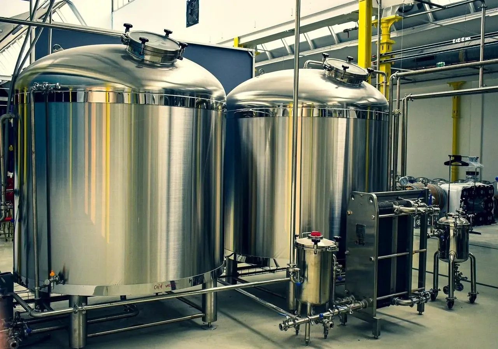

Orbital Ecology
Predictive intelligence for closed biological systems.
State estimation that calls out trouble hours or days ahead of the alarm, so you can intervene in time. For aquaculture, greenhouses and bioprocess systems.
The thesis
We read the sensors a facility already has, identify the failure point none of them measure, and forecast what is going to fail while there is still time to act.
The problem
A gauge tells you what has already happened. We forecast forward, thousands of futures at a time.
By the time a reading crosses its limit, the system may have already exhausted the biological reserve that made recovery possible. The underlying state can deteriorate for days before a threshold alarm is triggered. That blind spot is where losses compound.
of stock lost in a single night at a land-based farm after circulation pumps stopped and oxygen fell in two tanks.
Proximar Seafood · June 2025
of stock lost when one carbon dioxide filter failed structurally, about a fifth of the site.
Sustainable Blue · November 2023
of plant electricity spent on aeration in conventional activated sludge, set conservatively because nobody measures nitrifier state.
Drewnowski et al. · 2019
The method
Three steps. Only the first one changes.
Reconstruct the biology
Write down how the system actually behaves: what reacts with what, how fast, what moves where, what the organisms take up and how the population shifts. This is the only step that changes between an oyster hatchery and a space habitat, and it is where most of our work goes.
Decipher backwards
The estimator runs that model against the sensors already on site and works out the things nothing measures directly, with an honest error bar, every cycle.
Forecast forward
Take that state and run it forward under whatever you are planning to do next. This is where the warning hours come from. You get a forecast with a confidence attached to it, not a red light.
The products
Designed for closed biosystems in space. Built to go further on the ground.
Aquaculture operators get a product built around their systems and their decisions. Bioprocess operators get one built around theirs. The same core biological state-estimation engine underneath, because a pond, a bioreactor and a space habitat all solve the same problem: sustaining life inside a boundary.
Four products, one estimator. The only thing that changes between them is the model of the biology. That is why this is one company and not four.
The arc
From the mud to the moon, it is the same inverse problem.
A wastewater reactor, a fermenter, a fish farm and a sealed habitat are the same thing at different sizes. A closed loop of living chemistry, measured only at the edges, failing from the inside out. Work out how to read that state once and you can go through the domains in order instead of picking one and hoping.
Water and protein
Aquaculture and bioremediation, where the failures are expensive and the sensors are already in the tank.
Controlled agriculture
Glasshouse and vertical systems, where crop state is inferred from the environment the plant actually experienced.
Biomanufacturing
Fermentation and cell culture, where the assay is sparse and the yield decision is made between measurements.
Life support
A closed loop with no resupply and no exit. The hardest version of the same problem, and the reason to solve it properly.
The record
What has been tested, and against what.
Every completed result here is reproducible. The aquaculture figure is a held-out backtest on real commercial operating history. The rest run against the reference models these fields already use to test control strategies, so you can check the work yourself.
| Status | Benchmark | What was tested | Result |
|---|
Evaluation
Send one export. We will tell you what it was trying to say.
Send us an export you already keep. We run it blind, with the outcome window hidden from us, then tell you how many hours of warning you would have had, and how often we would have cried wolf.
- No connection to any live system. No change to any control loop.
- No fee, and the file is deleted afterwards.
- You keep the full workings, including where we would have missed.

Validated against the reference models these fields use, and backtested on real commercial operating history. The engine only reads. It estimates and forecasts, and changes nothing in your plant.